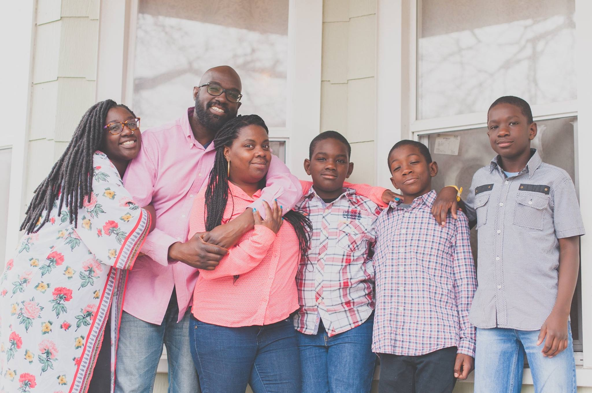
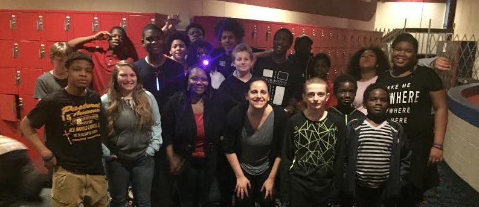

I have very fond memories of growing up in Detroit during the 80s and 90s. I remember summers spent just hanging with friends riding bikes, playing an array of sports and games. I also enjoyed great community with neighbors who cared and looked out for me and were quick to inform my parents if they saw me getting into any type of mischief. Detroit has been truly my home and the village that help raised me. But along with the happy memories are the memories of seeing how crime, poverty, addictions, poor education, and institutional injustices can destroy communities and cripple its families.
Currently the city’s families are experiencing brokenness in many forms. We have children who have lost fathers due to death, incarceration, and sadly abandonment. We have fathers who desire to do right by their families but for the reasons mentioned before struggle in the role. Then there are the homes in which a mother or grandparent is left to raise children on their own.
As many of you may know, I along with my wife and children continue to call Detroit home. We are also members of Mack Avenue Community Church (MACC). MACC is a church located in the 48214 zip code on the lower east side of the city. Our mission is to see communities transformed both spiritually and physically beginning with our own. We do this spiritually through the proclamation of the gospel and by being and making disciples of Jesus Christ. We do this physically by loving and caring for our neighbors as well as the marginalized in our community.
And I'm pleased to say that God has blessed our efforts tremulously! Over MACC's brief history we have grown to be a multicultural church whose members live and do life in the 48214 community. We have been blessed to start a community development corporation that provides sports, literacy, housing programs and legal services to our neighbors.
Over the last two years I have served as an elder at MACC. In this capacity I have had the great privilege to serve and lead through preaching, teaching, and discipling. During my time as an elder at MACC, my passion to care for the body of Christ and minister to the families in my community has deepened and matured into a desire to enter into the pastorate full time. That desire has now become a call to be the family discipleship pastor at MACC. In this position I will be responsible for creating and implementing a family and youth ministry that would equip parents to lead and disciple their children in all aspects of life, church, and community. I would also train and prepare our membership to care and minister to the families and youth in our community.
In order to take this position I will be resigning from my job at the U.S. Post Office and relying on God to make provisions for me and my family through the generosity of those who support what God is doing through MACC in the 48214.
As it stands now MACC is able to be self sustained in its annual operations, but is not yet able to fully support its staff financially. Until that day comes our whole pastoral team raises a portion of their financial salary in order to serve in ministry. This is the reason I'm reaching out to ask if you might consider becoming part of my prayer and financial support team. In order to raise my full salary I will need to raise $60,000.
Monthly support is preferred, however one-time gifts of any amount are greatly appreciated. All of your generous gifts are tax deductible and you will receive our quarterly newsletter.
Our monthly support goal can be achieved by:
There are two options for giving:
I will be getting in touch with you in the next few weeks in order to check in and also answer any questions you may have as you prayerfully consider this ask. Please remember, there is no pressure and we are thankful you would even consider this request.
Please, prayerfully, consider joining with us in our efforts to serve the Lord in Detroit.